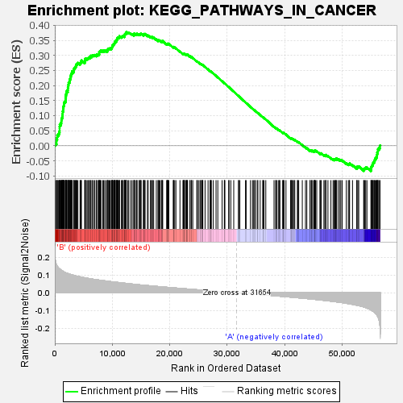
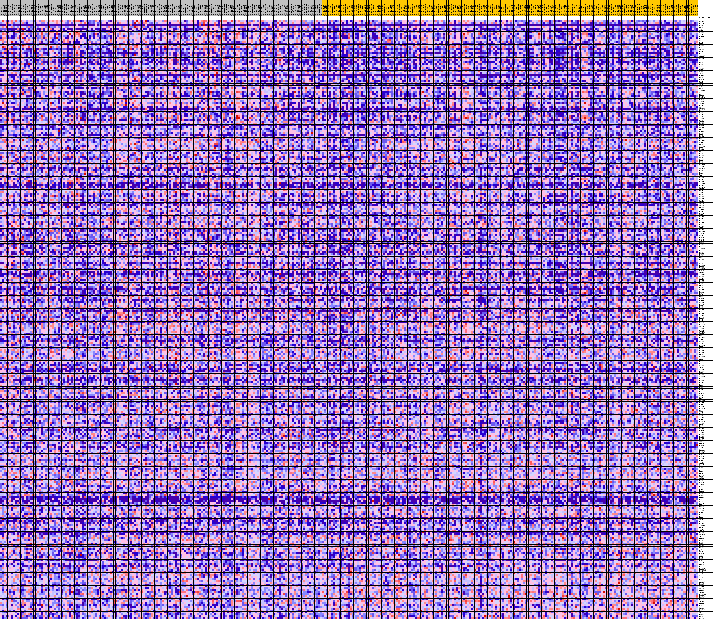
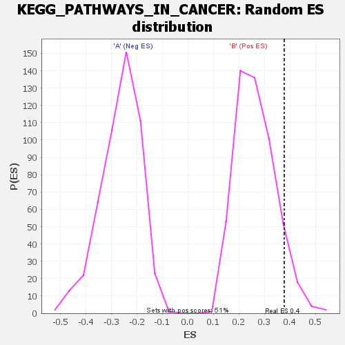

| | | Dataset | my.my.cls#B_versus_A.my.cls#B_versus_A_repos |
| Phenotype | my.cls#B_versus_A_repos |
| Upregulated in class | B |
| GeneSet | KEGG_PATHWAYS_IN_CANCER |
| Enrichment Score (ES) | 0.37782264 |
| Normalized Enrichment Score (NES) | 1.4277964 |
| Nominal p-value | 0.07692308 |
| FDR q-value | 0.5332841 |
| FWER p-Value | 0.838 |
Table: GSEA Results Summary

Fig 1: Enrichment plot: KEGG_PATHWAYS_IN_CANCER
Profile of the Running ES Score & Positions of GeneSet Members on the Rank Ordered List
| SYMBOL | TITLE | RANK IN GENE LIST | RANK METRIC SCORE | RUNNING ES | CORE ENRICHMENT | | 1 | VEGFB | na | 65 | 0.187 | 0.0087 | Yes |
| 2 | PLCG1 | na | 287 | 0.159 | 0.0132 | Yes |
| 3 | FGF3 | na | 293 | 0.158 | 0.0214 | Yes |
| 4 | DVL3 | na | 409 | 0.150 | 0.0273 | Yes |
| 5 | IL6 | na | 434 | 0.148 | 0.0347 | Yes |
| 6 | WNT6 | na | 605 | 0.142 | 0.0392 | Yes |
| 7 | VEGFC | na | 748 | 0.137 | 0.0439 | Yes |
| 8 | ABL1 | na | 823 | 0.135 | 0.0497 | Yes |
| 9 | FGFR1 | na | 835 | 0.134 | 0.0566 | Yes |
| 10 | FN1 | na | 839 | 0.134 | 0.0636 | Yes |
| 11 | AKT2 | na | 864 | 0.133 | 0.0702 | Yes |
| 12 | E2F1 | na | 1048 | 0.129 | 0.0738 | Yes |
| 13 | FGF4 | na | 1124 | 0.127 | 0.0792 | Yes |
| 14 | PDGFB | na | 1154 | 0.126 | 0.0853 | Yes |
| 15 | SUFU | na | 1182 | 0.125 | 0.0915 | Yes |
| 16 | AXIN2 | na | 1293 | 0.123 | 0.0960 | Yes |
| 17 | LEF1 | na | 1311 | 0.123 | 0.1022 | Yes |
| 18 | RET | na | 1365 | 0.122 | 0.1077 | Yes |
| 19 | TCF7L1 | na | 1370 | 0.122 | 0.1141 | Yes |
| 20 | TGFB2 | na | 1457 | 0.120 | 0.1189 | Yes |
| 21 | TGFB1 | na | 1477 | 0.120 | 0.1249 | Yes |
| 22 | AR | na | 1509 | 0.119 | 0.1307 | Yes |
| 23 | FZD9 | na | 1579 | 0.118 | 0.1357 | Yes |
| 24 | FGF2 | na | 1589 | 0.118 | 0.1418 | Yes |
| 25 | CRKL | na | 1679 | 0.116 | 0.1463 | Yes |
| 26 | TGFB3 | na | 1848 | 0.114 | 0.1493 | Yes |
| 27 | BMP4 | na | 1865 | 0.113 | 0.1550 | Yes |
| 28 | TRAF5 | na | 1910 | 0.113 | 0.1602 | Yes |
| 29 | IKBKG | na | 1935 | 0.112 | 0.1657 | Yes |
| 30 | FGF19 | na | 1959 | 0.112 | 0.1712 | Yes |
| 31 | FZD2 | na | 2023 | 0.111 | 0.1760 | Yes |
| 32 | LAMC1 | na | 2034 | 0.111 | 0.1817 | Yes |
| 33 | FGF17 | na | 2251 | 0.108 | 0.1836 | Yes |
| 34 | CDK4 | na | 2264 | 0.108 | 0.1891 | Yes |
| 35 | WNT16 | na | 2276 | 0.108 | 0.1946 | Yes |
| 36 | CDK2 | na | 2335 | 0.107 | 0.1992 | Yes |
| 37 | MMP9 | na | 2376 | 0.107 | 0.2042 | Yes |
| 38 | CDKN1B | na | 2405 | 0.107 | 0.2093 | Yes |
| 39 | GLI2 | na | 2537 | 0.105 | 0.2125 | Yes |
| 40 | MMP2 | na | 2582 | 0.105 | 0.2173 | Yes |
| 41 | FGF13 | na | 2621 | 0.104 | 0.2221 | Yes |
| 42 | STAT5B | na | 2752 | 0.103 | 0.2252 | Yes |
| 43 | PIK3R1 | na | 2777 | 0.103 | 0.2302 | Yes |
| 44 | CTNNB1 | na | 2807 | 0.102 | 0.2351 | Yes |
| 45 | CSF1R | na | 2866 | 0.102 | 0.2395 | Yes |
| 46 | MLH1 | na | 2970 | 0.101 | 0.2430 | Yes |
| 47 | SMO | na | 3006 | 0.101 | 0.2477 | Yes |
| 48 | CTNNA2 | na | 3275 | 0.098 | 0.2481 | Yes |
| 49 | PGF | na | 3311 | 0.098 | 0.2526 | Yes |
| 50 | FGFR2 | na | 3366 | 0.097 | 0.2568 | Yes |
| 51 | SPI1 | na | 3477 | 0.096 | 0.2600 | Yes |
| 52 | GLI3 | na | 3589 | 0.096 | 0.2630 | Yes |
| 53 | TGFBR2 | na | 3709 | 0.095 | 0.2659 | Yes |
| 54 | RXRG | na | 3723 | 0.094 | 0.2707 | Yes |
| 55 | STK36 | na | 3868 | 0.093 | 0.2731 | Yes |
| 56 | DAPK3 | na | 4015 | 0.092 | 0.2753 | Yes |
| 57 | LAMA1 | na | 4396 | 0.090 | 0.2733 | Yes |
| 58 | WNT5B | na | 4481 | 0.089 | 0.2765 | Yes |
| 59 | MET | na | 4533 | 0.089 | 0.2803 | Yes |
| 60 | PIAS2 | na | 4632 | 0.088 | 0.2832 | Yes |
| 61 | WNT3 | na | 5196 | 0.084 | 0.2777 | Yes |
| 62 | FGF9 | na | 5255 | 0.084 | 0.2811 | Yes |
| 63 | MAPK1 | na | 5290 | 0.084 | 0.2849 | Yes |
| 64 | MAX | na | 5302 | 0.084 | 0.2892 | Yes |
| 65 | PDGFRB | na | 5494 | 0.083 | 0.2901 | Yes |
| 66 | STK4 | na | 5726 | 0.081 | 0.2903 | Yes |
| 67 | RXRB | na | 5856 | 0.081 | 0.2923 | Yes |
| 68 | CSF2RA | na | 6021 | 0.080 | 0.2936 | Yes |
| 69 | E2F3 | na | 6185 | 0.079 | 0.2949 | Yes |
| 70 | STAT1 | na | 6195 | 0.079 | 0.2989 | Yes |
| 71 | SKP2 | na | 6460 | 0.077 | 0.2983 | Yes |
| 72 | FZD7 | na | 6543 | 0.077 | 0.3009 | Yes |
| 73 | EGLN2 | na | 6759 | 0.076 | 0.3011 | Yes |
| 74 | AKT3 | na | 6968 | 0.075 | 0.3013 | Yes |
| 75 | WNT8B | na | 7223 | 0.074 | 0.3007 | Yes |
| 76 | MSH6 | na | 7278 | 0.073 | 0.3036 | Yes |
| 77 | CUL2 | na | 7534 | 0.072 | 0.3029 | Yes |
| 78 | COL4A2 | na | 7693 | 0.072 | 0.3039 | Yes |
| 79 | ITGB1 | na | 7715 | 0.071 | 0.3073 | Yes |
| 80 | WNT10A | na | 7720 | 0.071 | 0.3110 | Yes |
| 81 | FGF8 | na | 7808 | 0.071 | 0.3132 | Yes |
| 82 | BID | na | 7926 | 0.070 | 0.3149 | Yes |
| 83 | RARA | na | 8024 | 0.070 | 0.3169 | Yes |
| 84 | SHH | na | 8332 | 0.069 | 0.3150 | Yes |
| 85 | CEBPA | na | 8467 | 0.068 | 0.3163 | Yes |
| 86 | FZD1 | na | 8673 | 0.067 | 0.3162 | Yes |
| 87 | PIAS4 | na | 8921 | 0.066 | 0.3153 | Yes |
| 88 | ZBTB16 | na | 9135 | 0.065 | 0.3150 | Yes |
| 89 | FZD10 | na | 9168 | 0.065 | 0.3178 | Yes |
| 90 | COL4A6 | na | 9229 | 0.065 | 0.3202 | Yes |
| 91 | TRAF2 | na | 9283 | 0.065 | 0.3227 | Yes |
| 92 | RAF1 | na | 9467 | 0.064 | 0.3228 | Yes |
| 93 | ARAF | na | 9623 | 0.063 | 0.3234 | Yes |
| 94 | FZD8 | na | 9840 | 0.062 | 0.3229 | Yes |
| 95 | WNT9B | na | 9854 | 0.062 | 0.3259 | Yes |
| 96 | AXIN1 | na | 9958 | 0.062 | 0.3274 | Yes |
| 97 | GLI1 | na | 10022 | 0.062 | 0.3295 | Yes |
| 98 | TRAF1 | na | 10025 | 0.062 | 0.3327 | Yes |
| 99 | WNT7A | na | 10060 | 0.062 | 0.3354 | Yes |
| 100 | WNT9A | na | 10211 | 0.061 | 0.3359 | Yes |
| 101 | BRCA2 | na | 10274 | 0.061 | 0.3380 | Yes |
| 102 | STAT3 | na | 10349 | 0.060 | 0.3399 | Yes |
| 103 | RBX1 | na | 10431 | 0.060 | 0.3416 | Yes |
| 104 | PTCH1 | na | 10446 | 0.060 | 0.3446 | Yes |
| 105 | WNT2 | na | 10489 | 0.060 | 0.3470 | Yes |
| 106 | COL4A1 | na | 10666 | 0.059 | 0.3470 | Yes |
| 107 | FGF1 | na | 10690 | 0.059 | 0.3497 | Yes |
| 108 | RALGDS | na | 10790 | 0.059 | 0.3510 | Yes |
| 109 | PDGFA | na | 10814 | 0.059 | 0.3537 | Yes |
| 110 | PAX8 | na | 10863 | 0.059 | 0.3560 | Yes |
| 111 | MAPK8 | na | 10898 | 0.058 | 0.3585 | Yes |
| 112 | GRB2 | na | 11019 | 0.058 | 0.3594 | Yes |
| 113 | FGF10 | na | 11197 | 0.057 | 0.3593 | Yes |
| 114 | MAPK10 | na | 11212 | 0.057 | 0.3620 | Yes |
| 115 | CCND1 | na | 11255 | 0.057 | 0.3643 | Yes |
| 116 | WNT1 | na | 11589 | 0.056 | 0.3614 | Yes |
| 117 | LAMB1 | na | 11680 | 0.055 | 0.3627 | Yes |
| 118 | LAMA4 | na | 11784 | 0.055 | 0.3638 | Yes |
| 119 | CXCL8 | na | 11913 | 0.055 | 0.3644 | Yes |
| 120 | LAMB2 | na | 12121 | 0.054 | 0.3636 | Yes |
| 121 | FGFR3 | na | 12150 | 0.054 | 0.3659 | Yes |
| 122 | DCC | na | 12161 | 0.054 | 0.3686 | Yes |
| 123 | CDKN2B | na | 12186 | 0.054 | 0.3710 | Yes |
| 124 | BCL2L1 | na | 12299 | 0.053 | 0.3718 | Yes |
| 125 | FGF5 | na | 12406 | 0.053 | 0.3727 | Yes |
| 126 | LAMC3 | na | 12407 | 0.053 | 0.3755 | Yes |
| 127 | DVL2 | na | 12434 | 0.053 | 0.3778 | Yes |
| 128 | NKX3-1 | na | 12700 | 0.052 | 0.3759 | No |
| 129 | PIAS3 | na | 12872 | 0.051 | 0.3755 | No |
| 130 | CBL | na | 13204 | 0.050 | 0.3723 | No |
| 131 | WNT3A | na | 13455 | 0.049 | 0.3704 | No |
| 132 | PIK3R5 | na | 13767 | 0.048 | 0.3674 | No |
| 133 | EP300 | na | 13769 | 0.048 | 0.3700 | No |
| 134 | ITGA2B | na | 13783 | 0.048 | 0.3723 | No |
| 135 | PRKCA | na | 13897 | 0.047 | 0.3728 | No |
| 136 | ARNT2 | na | 14153 | 0.047 | 0.3707 | No |
| 137 | CTNNA3 | na | 14287 | 0.046 | 0.3708 | No |
| 138 | WNT2B | na | 14298 | 0.046 | 0.3730 | No |
| 139 | CKS1B | na | 14646 | 0.045 | 0.3693 | No |
| 140 | NTRK1 | na | 14733 | 0.045 | 0.3701 | No |
| 141 | BIRC2 | na | 14899 | 0.044 | 0.3695 | No |
| 142 | FGF7 | na | 14902 | 0.044 | 0.3718 | No |
| 143 | RHOA | na | 15025 | 0.044 | 0.3720 | No |
| 144 | RAC3 | na | 15440 | 0.043 | 0.3669 | No |
| 145 | WNT11 | na | 15455 | 0.043 | 0.3689 | No |
| 146 | BCL2 | na | 15463 | 0.042 | 0.3710 | No |
| 147 | LAMA2 | na | 15593 | 0.042 | 0.3709 | No |
| 148 | MMP1 | na | 15709 | 0.042 | 0.3711 | No |
| 149 | SMAD2 | na | 16124 | 0.041 | 0.3659 | No |
| 150 | RUNX1 | na | 16233 | 0.040 | 0.3661 | No |
| 151 | FGF16 | na | 16643 | 0.039 | 0.3609 | No |
| 152 | WNT5A | na | 16716 | 0.039 | 0.3616 | No |
| 153 | MAP2K1 | na | 16959 | 0.038 | 0.3593 | No |
| 154 | RALB | na | 16979 | 0.038 | 0.3610 | No |
| 155 | FZD3 | na | 17202 | 0.037 | 0.3590 | No |
| 156 | FGF14 | na | 17657 | 0.036 | 0.3529 | No |
| 157 | FGF6 | na | 17964 | 0.035 | 0.3493 | No |
| 158 | RAD51 | na | 17976 | 0.035 | 0.3510 | No |
| 159 | ITGAV | na | 18137 | 0.035 | 0.3499 | No |
| 160 | FASLG | na | 18302 | 0.034 | 0.3488 | No |
| 161 | HIF1A | na | 18550 | 0.034 | 0.3462 | No |
| 162 | FZD4 | na | 18610 | 0.033 | 0.3469 | No |
| 163 | CDKN2A | na | 18738 | 0.033 | 0.3464 | No |
| 164 | FLT3LG | na | 18760 | 0.033 | 0.3478 | No |
| 165 | SMAD4 | na | 19454 | 0.031 | 0.3371 | No |
| 166 | TGFBR1 | na | 19572 | 0.031 | 0.3367 | No |
| 167 | FOXO1 | na | 19593 | 0.031 | 0.3379 | No |
| 168 | STAT5A | na | 19640 | 0.031 | 0.3387 | No |
| 169 | GSK3B | na | 19705 | 0.030 | 0.3392 | No |
| 170 | FAS | na | 19843 | 0.030 | 0.3384 | No |
| 171 | PDGFRA | na | 20618 | 0.028 | 0.3261 | No |
| 172 | CDK6 | na | 20659 | 0.028 | 0.3268 | No |
| 173 | WNT7B | na | 20664 | 0.028 | 0.3282 | No |
| 174 | CHUK | na | 20857 | 0.027 | 0.3263 | No |
| 175 | PIK3CG | na | 21068 | 0.027 | 0.3240 | No |
| 176 | FZD5 | na | 21774 | 0.025 | 0.3127 | No |
| 177 | BIRC5 | na | 22291 | 0.023 | 0.3048 | No |
| 178 | NCOA4 | na | 22378 | 0.023 | 0.3045 | No |
| 179 | EPAS1 | na | 22470 | 0.023 | 0.3041 | No |
| 180 | RAC2 | na | 22472 | 0.023 | 0.3053 | No |
| 181 | PIK3R3 | na | 22479 | 0.023 | 0.3064 | No |
| 182 | VHL | na | 22712 | 0.022 | 0.3035 | No |
| 183 | PTK2 | na | 22864 | 0.022 | 0.3019 | No |
| 184 | PTEN | na | 22874 | 0.022 | 0.3029 | No |
| 185 | PLCG2 | na | 22904 | 0.022 | 0.3036 | No |
| 186 | SLC2A1 | na | 23070 | 0.021 | 0.3018 | No |
| 187 | TP53 | na | 23100 | 0.021 | 0.3024 | No |
| 188 | CCNE1 | na | 23517 | 0.020 | 0.2961 | No |
| 189 | PRKCG | na | 23529 | 0.020 | 0.2969 | No |
| 190 | FADD | na | 23762 | 0.020 | 0.2939 | No |
| 191 | CTBP2 | na | 23798 | 0.020 | 0.2943 | No |
| 192 | CREBBP | na | 24006 | 0.019 | 0.2916 | No |
| 193 | KIT | na | 24704 | 0.017 | 0.2801 | No |
| 194 | FGF23 | na | 24786 | 0.017 | 0.2796 | No |
| 195 | FGF18 | na | 24993 | 0.017 | 0.2768 | No |
| 196 | E2F2 | na | 25257 | 0.016 | 0.2730 | No |
| 197 | RELA | na | 25360 | 0.016 | 0.2720 | No |
| 198 | MDM2 | na | 25536 | 0.015 | 0.2697 | No |
| 199 | SOS1 | na | 25614 | 0.015 | 0.2691 | No |
| 200 | BAD | na | 25699 | 0.015 | 0.2684 | No |
| 201 | HDAC2 | na | 25752 | 0.015 | 0.2682 | No |
| 202 | ARNT | na | 26140 | 0.014 | 0.2621 | No |
| 203 | COL4A4 | na | 26664 | 0.012 | 0.2534 | No |
| 204 | RB1 | na | 27035 | 0.011 | 0.2474 | No |
| 205 | MAP2K2 | na | 27050 | 0.011 | 0.2478 | No |
| 206 | FGF11 | na | 27146 | 0.011 | 0.2467 | No |
| 207 | ETS1 | na | 27233 | 0.011 | 0.2457 | No |
| 208 | RUNX1T1 | na | 27567 | 0.010 | 0.2403 | No |
| 209 | PIK3CB | na | 28048 | 0.009 | 0.2323 | No |
| 210 | PML | na | 28357 | 0.008 | 0.2272 | No |
| 211 | JAK1 | na | 29107 | 0.006 | 0.2143 | No |
| 212 | EGFR | na | 29493 | 0.005 | 0.2077 | No |
| 213 | TGFA | na | 29518 | 0.005 | 0.2075 | No |
| 214 | CDC42 | na | 29589 | 0.005 | 0.2066 | No |
| 215 | BRAF | na | 30251 | 0.003 | 0.1950 | No |
| 216 | PIK3CD | na | 30315 | 0.003 | 0.1941 | No |
| 217 | CSF3R | na | 30624 | 0.002 | 0.1887 | No |
| 218 | HRAS | na | 31126 | 0.001 | 0.1799 | No |
| 219 | BCR | na | 31967 | -0.001 | 0.1650 | No |
| 220 | VEGFA | na | 31973 | -0.001 | 0.1650 | No |
| 221 | FGF21 | na | 32194 | -0.001 | 0.1611 | No |
| 222 | CCNE2 | na | 33175 | -0.004 | 0.1439 | No |
| 223 | FGF22 | na | 33286 | -0.004 | 0.1422 | No |
| 224 | EGLN3 | na | 34038 | -0.006 | 0.1291 | No |
| 225 | DAPK1 | na | 34386 | -0.007 | 0.1233 | No |
| 226 | MSH2 | na | 34594 | -0.007 | 0.1200 | No |
| 227 | CASP9 | na | 34770 | -0.008 | 0.1173 | No |
| 228 | PRKCB | na | 34892 | -0.008 | 0.1156 | No |
| 229 | LAMA5 | na | 35215 | -0.009 | 0.1103 | No |
| 230 | IGF1 | na | 35328 | -0.009 | 0.1088 | No |
| 231 | APC2 | na | 35728 | -0.010 | 0.1023 | No |
| 232 | PIK3R2 | na | 36180 | -0.011 | 0.0949 | No |
| 233 | NFKBIA | na | 36221 | -0.011 | 0.0947 | No |
| 234 | PIK3CA | na | 36393 | -0.012 | 0.0923 | No |
| 235 | HDAC1 | na | 36704 | -0.013 | 0.0875 | No |
| 236 | EGLN1 | na | 38140 | -0.016 | 0.0629 | No |
| 237 | KRAS | na | 38448 | -0.017 | 0.0583 | No |
| 238 | IKBKB | na | 38457 | -0.017 | 0.0591 | No |
| 239 | CTBP1 | na | 38667 | -0.018 | 0.0563 | No |
| 240 | TPR | na | 38942 | -0.019 | 0.0524 | No |
| 241 | XIAP | na | 39081 | -0.019 | 0.0510 | No |
| 242 | JUP | na | 39157 | -0.019 | 0.0507 | No |
| 243 | MSH3 | na | 39642 | -0.020 | 0.0431 | No |
| 244 | RAC1 | na | 39710 | -0.021 | 0.0430 | No |
| 245 | KITLG | na | 39796 | -0.021 | 0.0426 | No |
| 246 | TPM3 | na | 39878 | -0.021 | 0.0423 | No |
| 247 | TRAF6 | na | 40214 | -0.022 | 0.0375 | No |
| 248 | MITF | na | 41021 | -0.024 | 0.0245 | No |
| 249 | PIAS1 | na | 41100 | -0.024 | 0.0244 | No |
| 250 | CASP8 | na | 41202 | -0.025 | 0.0239 | No |
| 251 | HGF | na | 41248 | -0.025 | 0.0244 | No |
| 252 | TCF7 | na | 41455 | -0.025 | 0.0220 | No |
| 253 | RXRA | na | 41635 | -0.026 | 0.0202 | No |
| 254 | FGF12 | na | 41748 | -0.026 | 0.0196 | No |
| 255 | FLT3 | na | 42210 | -0.028 | 0.0129 | No |
| 256 | NFKB2 | na | 42258 | -0.028 | 0.0135 | No |
| 257 | ERBB2 | na | 42430 | -0.028 | 0.0120 | No |
| 258 | EGF | na | 43055 | -0.030 | 0.0025 | No |
| 259 | WNT8A | na | 43609 | -0.032 | -0.0056 | No |
| 260 | CCNA1 | na | 43841 | -0.033 | -0.0080 | No |
| 261 | MYC | na | 44399 | -0.034 | -0.0161 | No |
| 262 | RASSF5 | na | 44418 | -0.034 | -0.0146 | No |
| 263 | GSTP1 | na | 44649 | -0.035 | -0.0169 | No |
| 264 | ITGA3 | na | 44700 | -0.035 | -0.0159 | No |
| 265 | NRAS | na | 44857 | -0.036 | -0.0168 | No |
| 266 | RARB | na | 45092 | -0.036 | -0.0190 | No |
| 267 | FH | na | 45195 | -0.037 | -0.0189 | No |
| 268 | NOS2 | na | 45216 | -0.037 | -0.0173 | No |
| 269 | WNT4 | na | 45218 | -0.037 | -0.0154 | No |
| 270 | PTGS2 | na | 45365 | -0.037 | -0.0160 | No |
| 271 | PTCH2 | na | 45568 | -0.038 | -0.0176 | No |
| 272 | CDKN1A | na | 46114 | -0.040 | -0.0252 | No |
| 273 | DVL1 | na | 46236 | -0.040 | -0.0252 | No |
| 274 | IGF1R | na | 46349 | -0.041 | -0.0250 | No |
| 275 | APPL1 | na | 46814 | -0.042 | -0.0310 | No |
| 276 | FGF20 | na | 46975 | -0.043 | -0.0316 | No |
| 277 | WNT10B | na | 47157 | -0.044 | -0.0325 | No |
| 278 | TFG | na | 47162 | -0.044 | -0.0302 | No |
| 279 | MAPK3 | na | 47515 | -0.045 | -0.0341 | No |
| 280 | MTOR | na | 48030 | -0.047 | -0.0408 | No |
| 281 | FZD6 | na | 48406 | -0.048 | -0.0449 | No |
| 282 | RALA | na | 48603 | -0.049 | -0.0458 | No |
| 283 | DAPK2 | na | 48703 | -0.050 | -0.0449 | No |
| 284 | MAPK9 | na | 48865 | -0.050 | -0.0451 | No |
| 285 | JUN | na | 48909 | -0.051 | -0.0432 | No |
| 286 | AKT1 | na | 48994 | -0.051 | -0.0420 | No |
| 287 | LAMB4 | na | 49277 | -0.052 | -0.0443 | No |
| 288 | ITGA2 | na | 49551 | -0.053 | -0.0463 | No |
| 289 | PLD1 | na | 49757 | -0.054 | -0.0471 | No |
| 290 | SOS2 | na | 49991 | -0.055 | -0.0483 | No |
| 291 | KLK3 | na | 50708 | -0.059 | -0.0579 | No |
| 292 | CCDC6 | na | 51061 | -0.061 | -0.0609 | No |
| 293 | LAMC2 | na | 51221 | -0.062 | -0.0605 | No |
| 294 | HHIP | na | 51282 | -0.062 | -0.0583 | No |
| 295 | HSP90B1 | na | 51792 | -0.065 | -0.0639 | No |
| 296 | HSP90AB1 | na | 52529 | -0.070 | -0.0733 | No |
| 297 | CDH1 | na | 52556 | -0.070 | -0.0701 | No |
| 298 | ITGA6 | na | 52726 | -0.071 | -0.0693 | No |
| 299 | APC | na | 52881 | -0.072 | -0.0683 | No |
| 300 | CBLB | na | 53730 | -0.079 | -0.0791 | No |
| 301 | BAX | na | 53794 | -0.080 | -0.0760 | No |
| 302 | TCF7L2 | na | 53938 | -0.082 | -0.0743 | No |
| 303 | PPARD | na | 54087 | -0.083 | -0.0725 | No |
| 304 | LAMA3 | na | 54301 | -0.086 | -0.0718 | No |
| 305 | TRAF4 | na | 55009 | -0.097 | -0.0792 | No |
| 306 | SMAD3 | na | 55016 | -0.097 | -0.0742 | No |
| 307 | PPARG | na | 55047 | -0.098 | -0.0696 | No |
| 308 | CASP3 | na | 55148 | -0.099 | -0.0661 | No |
| 309 | HSP90AA1 | na | 55267 | -0.101 | -0.0629 | No |
| 310 | RALBP1 | na | 55322 | -0.103 | -0.0584 | No |
| 311 | RASSF1 | na | 55409 | -0.105 | -0.0544 | No |
| 312 | BIRC3 | na | 55562 | -0.108 | -0.0514 | No |
| 313 | TRAF3 | na | 55638 | -0.111 | -0.0468 | No |
| 314 | NFKB1 | na | 55714 | -0.113 | -0.0422 | No |
| 315 | FOS | na | 55867 | -0.117 | -0.0387 | No |
| 316 | CBLC | na | 56008 | -0.123 | -0.0347 | No |
| 317 | CTNNA1 | na | 56042 | -0.125 | -0.0287 | No |
| 318 | CRK | na | 56094 | -0.127 | -0.0229 | No |
| 319 | CYCS | na | 56191 | -0.133 | -0.0176 | No |
| 320 | LAMB3 | na | 56229 | -0.135 | -0.0111 | No |
| 321 | BMP2 | na | 56393 | -0.151 | -0.0060 | No |
| 322 | MECOM | na | 56577 | -0.190 | 0.0008 | No |
Table: GSEA details [plain text format]

Fig 2: KEGG_PATHWAYS_IN_CANCER
Blue-Pink O' Gram in the Space of the Analyzed GeneSet

Fig 3: KEGG_PATHWAYS_IN_CANCER: Random ES distribution
Gene set null distribution of ES for KEGG_PATHWAYS_IN_CANCER